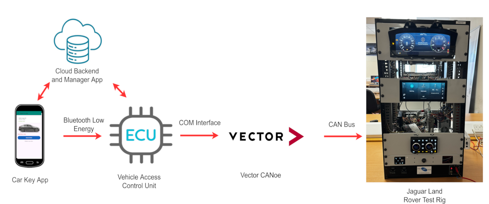

About
GoKey is a secure smartphone-based digital car key system designed for fleet and rental management. The system replaces traditional physical keys with cryptographically signed lock and unlock commands, ending in real CAN bus actuation on a Jaguar Land Rover test rig.
The headline security design is that no shared signing secret ever exists between the phone and the cloud. Each user's private signing key is generated on first sign-in inside the Android Keystore - hardware-backed and non-exportable - and only the public key is uploaded to the cloud for the Vehicle Access Control Unit to verify against.
The prototype is made up of an Android app (driver and manager roles), a Python VACU, a Firebase cloud backend, a Streamlit monitoring dashboard, and a CAN interface using Vector CANoe connected to a Jaguar Land Rover test rig.
System Components
Context Diagram

Architecture

Android Car Key App
The Android app holds both the driver and manager roles inside a single codebase. After Firebase Authentication, the user's role is read from their Firestore profile and the navigation graph routes them to the correct home screen. Drivers authenticate with biometrics (fingerprint or face) on session resume.
On first sign-in, the app generates an ECDSA P-256 key pair inside the Android Keystore. The private key is hardware-backed and non-exportable, even on a rooted device. The public key is uploaded once to the user's Firestore profile.
Vehicle Access Control Unit (VACU)
A Python application that acts as the BLE GATT central and the only path between the phone and the vehicle network. Every incoming command runs through a four-stage validation pipeline:
- Format and timestamp freshness
- Nonce uniqueness against an in-memory cache
- Active key state in Firestore
- ECDSA-SHA256 signature verification using the user's registered public key
Any stage failure rejects the command, logs the failure with a reason, and surfaces it on the dashboard.
CANoe & JLR Test Rig
Once the VACU approves a command, it forwards it to Vector CANoe via the Microsoft COM interface. CANoe simulates the rig's Janix module by replaying captured CAN traffic, with the ignition state message generated manually based on a system variable. CANoe then transmits the corresponding CAN frame onto the bus, actuating the door lock on the Jaguar Land Rover test rig.
Cloud Backend & Manager Role
The cloud backend uses Firebase Authentication and Firestore to handle users, vehicles, digital keys, public keys, and the audit log. Firestore Security Rules enforce role-based access - drivers can read only their own key document and update only the publicKey field on their own user record, while only managers can write to the keys, vehicles, and users collections.
The manager interface is part of the same Android app, accessed when the signed-in user has the MANAGER role. Managers can:
- Create and manage users and vehicles
- Assign and revoke digital keys with expiry dates
- View the full audit log of every lock and unlock event across the fleet
Monitoring Dashboard
A Streamlit dashboard reads the audit log from Firestore in real time, showing fleet-wide lock and unlock events alongside a security overview that breaks down rejected attack attempts by failure reason.
Cybersecurity
A core focus of the project is evaluating the security of a smartphone-based digital car key. A threat model was developed and validated by running seven attack scenarios through the live VACU validation pipeline. All seven were rejected at the expected stage and logged in real time to the dashboard.
- Replay Attacks - Captured payloads cannot be reused. Mitigated by a 30-second timestamp window plus an in-memory nonce cache that catches sub-window replays the timestamp check alone cannot.
- Payload Tampering - Modifying any signed field (command, nonce, or timestamp) invalidates the ECDSA signature, which fails the VACU's stage four check.
- Unauthorised Access - Biometric authentication is required on session resume so a stolen unlocked phone cannot issue commands. Compromised keys are revoked through the manager interface and rejected on the next active key lookup.
- Cloud Data Breach - Firestore stores only public keys, never signing material. A database breach yields nothing that can be used to forge a command. Firestore Security Rules enforce role-based access and the audit log is write-only from the VACU.
- Man-in-the-Middle - Application-layer ECDSA signing protects payload integrity. The BLE transport channel itself is not encrypted in this prototype - enabling BLE Secure Connections is identified as future work.
Demo Video
End-to-end walkthrough of the system, from manager assigning a key through to the door lock actuating on the test rig.